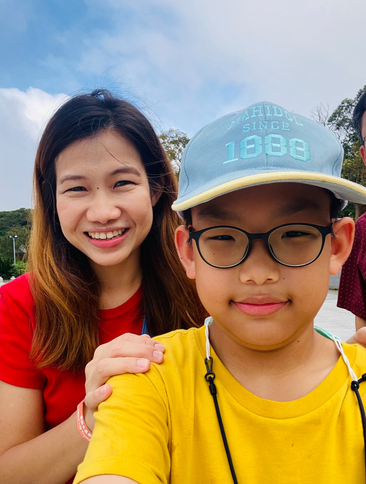

วันแม่แห่งชาติ
สิ่งที่อยากบอกแม่
แม่ของผมอายุ 45 ปีเกิดวันที่ 18 สิงหาคม พ.ศ. 2522 ตอนเด็กๆผมเป็นเด็กดีและเชื่อฟังแม่มาก แต่พอผมโตขึ้นผมก็เริ่มมีอารมณ์แปรปรวนมากขึ้น ส่วนหนึ่งมาจากเพื่อนที่โรงเรียนครับ ผมอยากจะบอกแม่ว่า ถึงแม้เราจะไม่ค่อยได้อยู่ด้วยกันในช่วงวันจันทร์ถึงศุกร์ แต่ผมสัญญาว่าผมจะไม่เอาแต่ใจตัวเอง ไม่พูดคำหยาบ และไม่ทำสิ่งที่ไม่ดีครับ ผมรักแม่ครับ
กลอนวันแม่
แม่ที่ฉันรัก
เมื่อวันแม่แห่งชาติได้มาถึง
ลูกคำนึงคิดถึงแม่อยู่เสมอ
อยากกลับบ้านนานมากแล้วไม่ได้เจอ
ได้เพียงแต่โทรผ่านเบอร์คุยสายไป